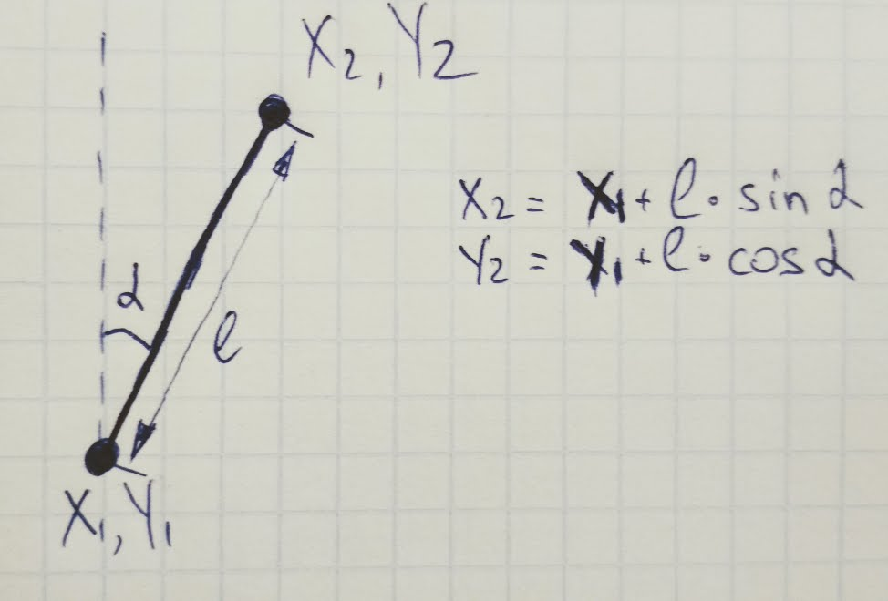
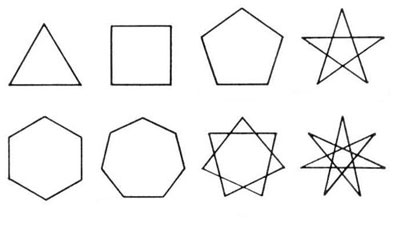

Аби підвести черту під попереднім заняттям, почнемо урок з простенької, але симпатичної, фігури. Тобі наполегливо пропонується вікдрити цю сторінку через улюблений IDE, та заглянути в js код який виводить цей малюнок на екран.
Насправді рекурсія це дуже просто. Її суть полягає в тому, що функція визиває сама себе. Пам'ятаєш задачу з вивдом чорнобілих кіл в циклі? Нижче той самий результат досягається через рекурсію.
Якщо оновити сторінку - дререво стане іншим. Прицип малювання дерева доволі простий. Програма вміє малювати лише пряму лінію заданої довжини під певним кутом. Тобто початок лінії задається абсолютними координатами X та Y. Знаючи бажану довжину лінії та кут її нахилу (відносно вертикальної лінії) програма визначає абсолютні координати кінцевої точки лінії. Перехід від відносних координат до абсолютних робиться по формулі:  Так це тригонометрія в дії :) Якщо оновити сторінку - то буде намальовано інше дерево.
Намалювати рівносторонній N-кутник, використовуючи функцію аналог фунції stem. Кут повороту дорівнює 360/N 
Бонус бали за зірочку :)